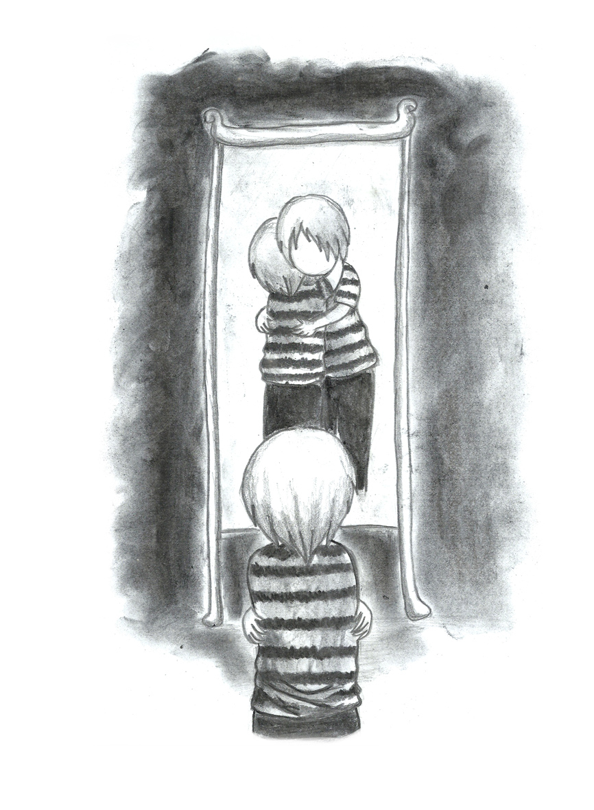

Select stories
Discover my heartwarming world. See the world through my eyes.
____________


Jon had a heavy heart.
It was so huge, he could not see straight.
He always looked down.
Although, there was nothing special on the ground.
All the time I heard him crying.
He started influencing me with his sorrow.
I also started looking down at the ground all the time, and be sad.
This was not good for both of us.
So, I came up with an idea.
One day, as he walked past me while sobbing, I sneaked up behind him and scared him with my loud voice that it made him jump.
Suddenly, I saw a huge house coming out from his chest.
He cried while smiling.
He felt lighter than before.
Jon had a heavy heart.
It was so huge, he could not see straight.
He always looked down.
Although, there was nothing special on the ground.
All the time I heard him crying.
He started influencing me with his sorrow.
I also started looking down at the ground all the time, and be sad.
This was not good for both of us.
So, I came up with an idea.
One day, as he walked past me while sobbing, I sneaked up behind him and scared him with my loud voice that it made him jump.
Suddenly, I saw a huge house coming out from his chest.
He cried while smiling.
He felt lighter than before.
Sam, one of my neighbour, just had an awful accident.
He had a very bad head damage, the doctor could not save his head.
When he returned home, no one recognised him.
People thought he died in the car wreck.
It was so lonely being him. But I always said hi and had a cup of coffee with him and I did recognised him.
One day, when we had a cup of coffee together, I saw that his shoulder was shaking.
Looking at his body gesture, I was sure that he was crying, although no sound was heard and no tears were shown.
How many times you have ever wondered, if you always walk alone.
The road seems too long, new people seem so frightening.
The journey to your dream seem so exhausting.
Then, you end up hunkering in the corner of your room,
crying and devastating.
But, you see, you are never alone because there are always two person in every one of us.
Amongst all beautiful girls in te world, there was only one that caught my eyes.
She was the most splendid girl I had ever met in my life.
She was friendly and refreshing.
She always walked past my house, said hi to me and asked how I was.
She always gave me courage when I was down.
And the nicest thing of all, was that her smile never ceased.
She had the most astonishing hair and the most authentic glasses.
She was perfect in my own world.
I could write her name on the blue sea, on the mountains, on both of my palm, and on my chest.
Miss Apple Juice brought life to my deserted heart.
Miss Apple Juice brought light to my dark eyes.
Feel free to get in touch with me if you have any question or comments
____________

A little thing you should know about me
Having sent by the goddess of rain, Maximus found himself in a strange city called Bonobon. He did not know why he was sent there, and all his time he was longing to find the meaning of life. Maximus's journal is a compilation of Maximus' journey when he was up and down, broken and happy, sad and grateful.
____________